公式总结
1 信号与系统
离散时间复指数序列的周期性：离散时间复指数序列\(x[n]=e^{j\omega_0n}\)具有周期性需要满足条件\(\frac{\omega_0}{2\pi}=\frac{m}{N}\)
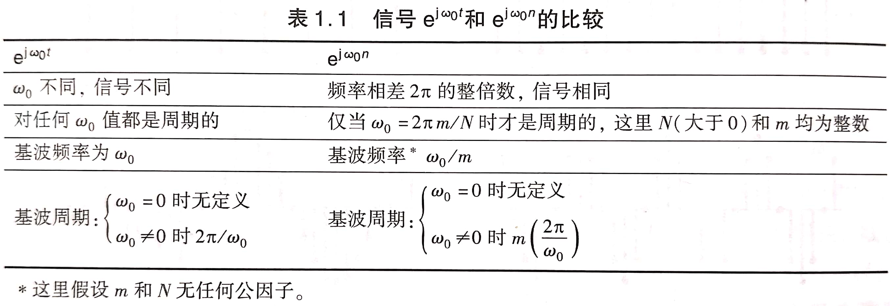
2 线性时不变系统
2.1 离散时间LTI系统：卷积和
用脉冲表示离散时间信号：\(x[n]=\sum_{k=-\infty}^{+\infty}x[k]\delta[n-k]\)
卷积和：\(y[n]=\sum_{k=-\infty}^{+\infty}x[k]h[n-k]=x[n]*h[n]\)
2.2 连续时间LTI系统：卷积积分
用冲激表示连续时间信号：\(x(t)=\int_{-\infty}^{+\infty}x(\tau)\delta(t-\tau)d\tau\)
卷积积分：\(y(t)=\int_{-\infty}^{+\infty}x(\tau)h(t-\tau)d\tau=x(t)*h(t)\)
2.3 LTI系统的性质
- 交换律、结合律、分配律
- 记忆/无记忆：\(h(t)=K\delta(t),y[n]=K\delta[n]\)
- 可逆/不可逆
- 因果/非因果：初始松弛条件（例如\(h[n]=0,n<0\)和\(h(t)=0,t<0\)）
- 稳定/不稳定：\(\sum_{k=-\infty}^{+\infty}|h[k]|<\infty\)，\(\int_{-\infty}^{+\infty}|h(\tau)|d\tau<\infty\)
2.4 差分和微分方程描述因果LTI系统
线性常系数微分方程：\(\sum_{k=0}^{N}a_k\frac{d^{k}y(t)}{dt^k}=\sum_{k=0}^{M}\frac{d^kx(t)}{dt^k}\)
线性常系数差分方程：\(\sum_{k=0}^{N}a_ky[n-k]=\sum_{k=0}^{M}b_kx[n-k]\)
3 周期信号的傅里叶级数表示
3.1 LTI系统对复指数信号的响应
特征函数与特征值：\(x(t)=e^{st},x[n]=z^n\)
- \(y(t)=\int_{-\infty}^{+\infty}h(\tau)x(t-\tau)d\tau=e^{st}\int_{-\infty}^{+\infty}h(\tau)e^{-s\tau}d\tau=H(s)e^{st}\)
- \(y(t)=\sum_{k}a_kH(s_k)e^{s_kt}\)
- \(y[n]=\sum_{k=-\infty}^{+\infty}h[k]x[n-k]=z^n\sum_{k=-\infty}^{+\infty}h[k]z^{-k}=H(z)z^n\)
- \(y[n]=\sum_{k}a_kH(z_k)z_k^n\)
3.2 连续时间周期信号的傅里叶级数表示
3.2.1 连续时间周期信号的傅里叶级数
连续时间周期信号傅里叶级数表示：\(x(t)=\sum_{k=-\infty}^{+\infty}a_ke^{jk\omega_0t}\)
- 一次谐波分量（基波分量）、二次谐波分量...
连续时间周期信号傅里叶级数表示的确定：\(a_k=\frac{1}{T}\int_{T}x(t)e^{-jk\omega_0t}dt\)
- \(a_0=\frac{1}{T}\int_{T}x(t)dt\)，直流分量
3.2.2 傅里叶级数的收敛
狄里赫利条件：
- 任何周期内\(x(t)\)绝对可积：\(\int_{T}|x(t)|dt<\infty\)
- 任意有限区间内，\(x(t)\)具有有限个起伏变化，即在任何单个周期内\(x(t)\)最大值和最小值的数目有限
- 任意有限区间内，只有有限个不连续点，且这些不连续点上函数值有限
3.2.3 连续时间傅里叶级数性质
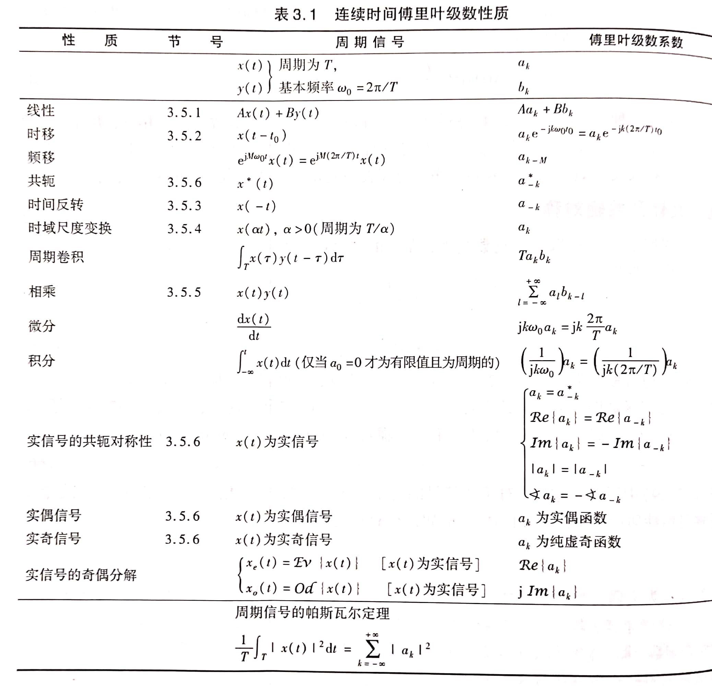
3.3 离散时间周期信号的傅里叶级数表示
3.3.1 离散时间周期信号的傅里叶级数
离散时间周期信号傅里叶级数表示：\(x[n]=\sum_{k=<N>}a_ke^{jk\omega_0n}\)
离散时间周期信号傅里叶级数表示的确定：\(a_k=\frac{1}{N}\sum_{n=<N>}x[n]e^{-jk\omega_0n}\)
3.3.2 离散时间傅里叶级数性质
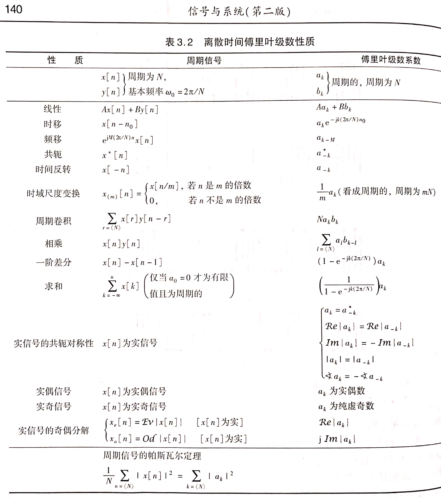
3.4 傅里叶级数与LTI系统
系统函数：\(\begin{cases}H(s)=\int_{-\infty}^{+\infty}h(t)e^{-st}dt\\H(z)=\sum_{k=-\infty}^{+\infty}h[k]z^{-k}\end{cases}\)
频率响应：\(\begin{cases}H(j\omega)=\int_{-\infty}^{+\infty}h(t)e^{-j\omega t}dt\\H(e^{j\omega})=\sum_{k=-\infty}^{+\infty}h[k]e^{-j\omega n}\end{cases}\)
- 已知\(y(t)=x(t)*h(t)\)，且\(x(t)\longleftrightarrow a_k,y(t)\longleftrightarrow b_k\)，则有\(b_k=a_kH(jk\omega_0)\)
- 已知\(y[n]=x[n]*h[n]\)，且\(x[n]\longleftrightarrow a_k,y[n]\longleftrightarrow b_k\)，则有\(b_k=a_kH(e^{jk\omega_0})\)
4 连续时间傅里叶变换
4.1 连续时间傅里叶变换
傅里叶变换对：\(\begin{cases}X(j\omega)=\int_{-\infty}^{+\infty}x(t)e^{-j\omega t}dt\\x(t)=\frac{1}{2\pi}\int_{-\infty}^{+\infty}X(j\omega)e^{j\omega t}d\omega\end{cases}\)
- \(X(j\omega)\)称为频谱
4.2 傅里叶变换的收敛
狄里赫利条件：
- \(x(t)\)绝对可积
- 任何有限区间内，\(x(t)\)只有有限个最大值和最小值
- 任何有限区间内，\(x(t)\)有有限个不连续点，且每个不连续点必为有限值
4.3 周期信号的傅里叶变换
\(X(j\omega)=\sum_{k=-\infty}^{+\infty}2\pi a_k\delta(\omega-k\omega_0)\)
4.4 连续时间傅里叶变换性质


4.5 常见连续时间傅里叶变换对

4.6 由线性常系数微分方程表征的系统
\(\sum_{k=0}^{N}a_k\frac{d^{k}y(t)}{dt^k}=\sum_{k=0}^{M}b_k\frac{d^kx(t)}{dt^k}\)
- 对两边进行傅里叶变换后得到：\(\sum_{k=0}^{N}a_k(j\omega)^kY(j\omega)=\sum_{k=0}^{M}b_k(j\omega)^kX(j\omega)\)
- \(H(j\omega)=\frac{\sum_{k=0}^{M}b_k(j\omega)^k}{\sum_{k=0}^{N}a_k(j\omega)^k}\)
5 离散时间傅里叶变换
5.1 离散时间傅里叶变换
傅里叶变换对：\(\begin{cases}x[n]=\frac{1}{2\pi}\int_{2\pi}X(e^{j\omega})e^{j\omega n}d\omega\\X(e^{j\omega})=\sum_{n=-\infty}^{\infty}x[n]e^{-j\omega n}\end{cases}\)
5.2 傅里叶变换的收敛
\(\sum_{n=-\infty}^{\infty}|x[n]|^2<\infty\)或\(\sum_{n=-\infty}^{\infty}|x[n]|<\infty\)，则\(X(e^{j\omega})\)存在，且收敛
5.3 周期信号的傅里叶变换
\(X(e^{j\omega})=2\pi\sum_{k=-\infty}^{\infty}a_k\delta(w-\frac{2\pi}{N}k)\)
5.4 离散时间傅里叶变换性质
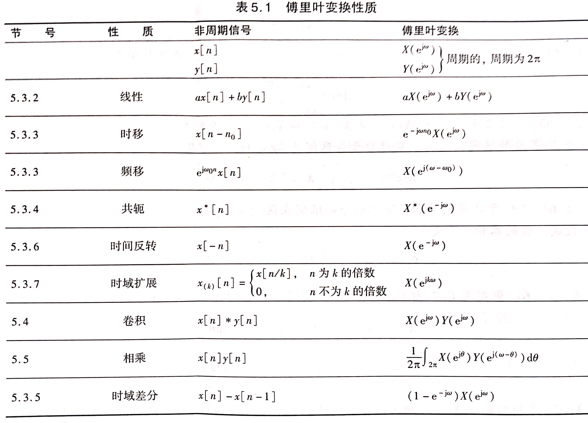
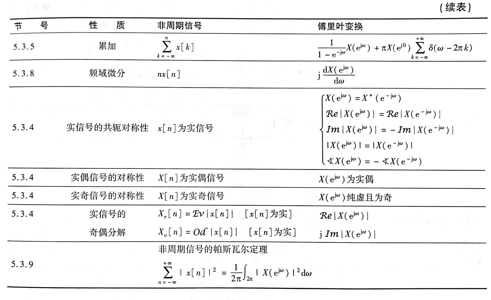
5.5 常见离散时间傅里叶变换对
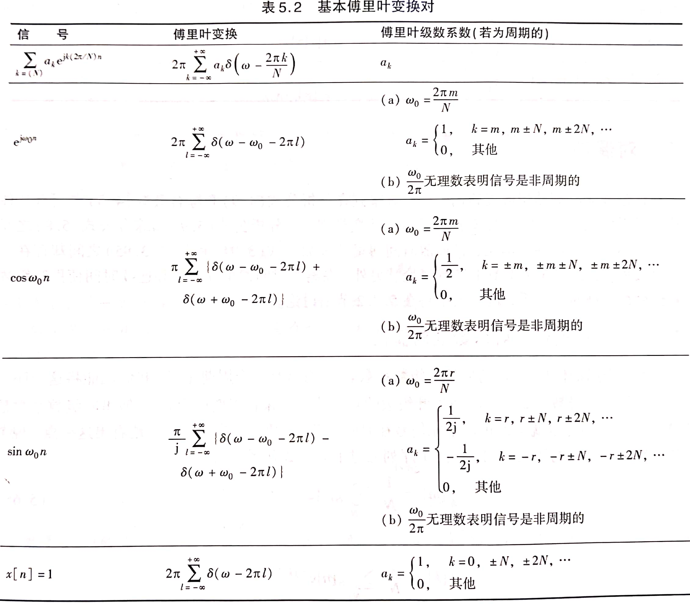
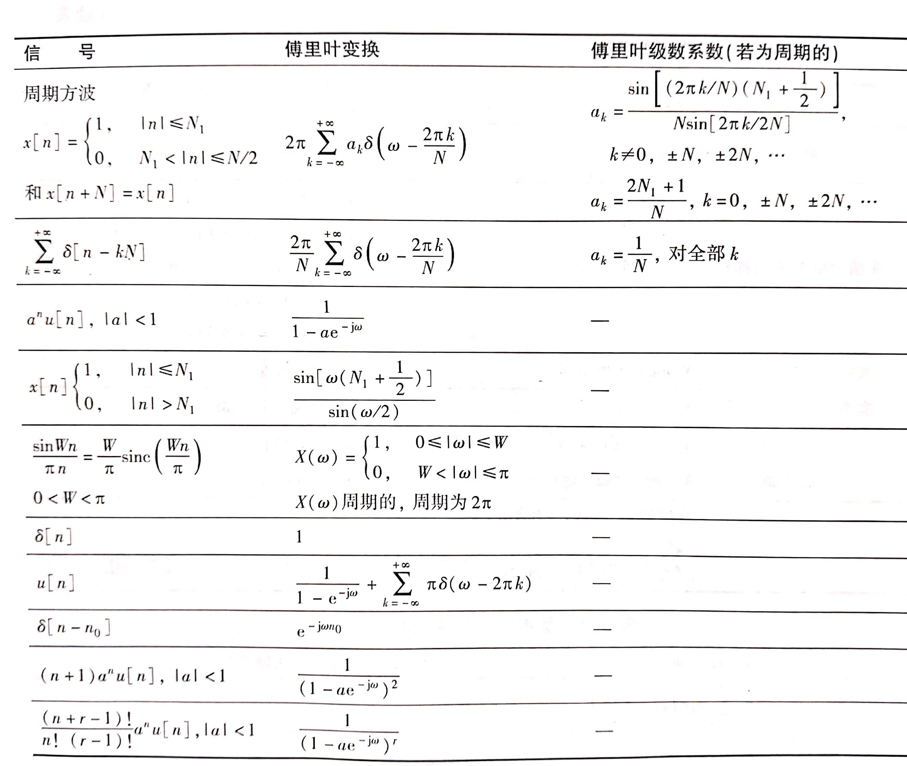
5.6 由线性常系数差分方程表征的系统
\(\sum_{k=0}^{N}a_ky[n-k]=\sum_{k=0}^{M}b_kx[n-k]\)
- \(H(e^{j\omega})=\frac{Y(e^{j\omega})}{X(e^{j\omega})}=\frac{\sum_{k=0}^{M}b_ke^{-jk\omega}}{\sum_{k=0}^{N}a_ke^{-jk\omega}}\)
- \(h[n]\)可由\(H(e^{j\omega})\)反变换得到
9 拉普拉斯变换
9.1 拉普拉斯变换
\(\begin{cases}X(s)=\int_{-\infty}^{+\infty}x(t)e^{-st}dt\\x(t)=\frac{1}{2\pi j}\int_{\sigma-j\infty}^{\sigma+j\infty}X(s)e^{st}ds\end{cases}\)
9.2 拉普拉斯变换收敛域
ROC的性质：
- ROC是S平面上平行于\(j\omega\)轴的带状区域
- 对于有理拉普拉斯变换，ROC内无极点
- 时限信号且该信号绝对可积，其ROC是整个S平面
- 右边信号的ROC是S平面内某一条平行于\(j\omega\)轴的直线的右边
- 左边信号的ROC是S平面内某一条平行于\(j\omega\)轴的直线的左边
- 双边信号的ROC如果存在，一定是S平面内平行于\(j\omega\)轴的带状区域
有理拉普拉斯变换的ROC性质：
- ROC总是由\(X(s)\)的极点分割
- 右边信号的ROC一定位于最右边极点的右边
- 左边信号的ROC一定位于最左边极点的左边
- 双边信号的ROC可以是任意两个相邻极点之间的带状区域
9.3 零极点图对傅里叶变换求值
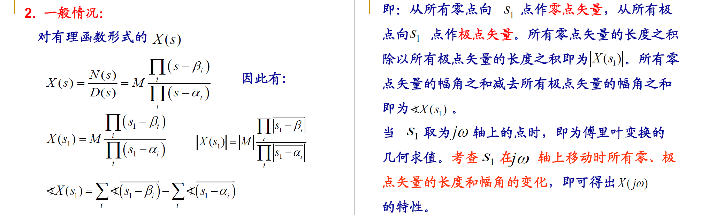
9.4 拉普拉斯变换的性质
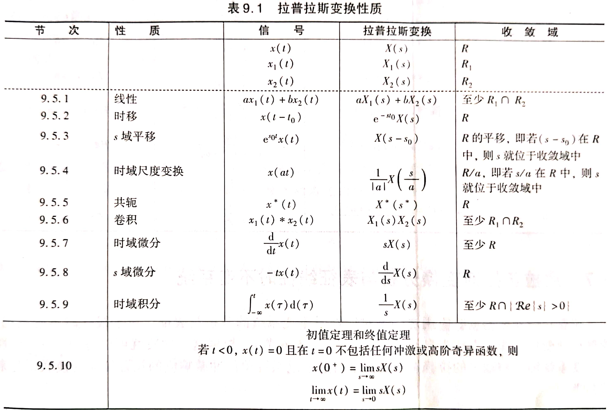
9.5 常见拉普拉斯变换对
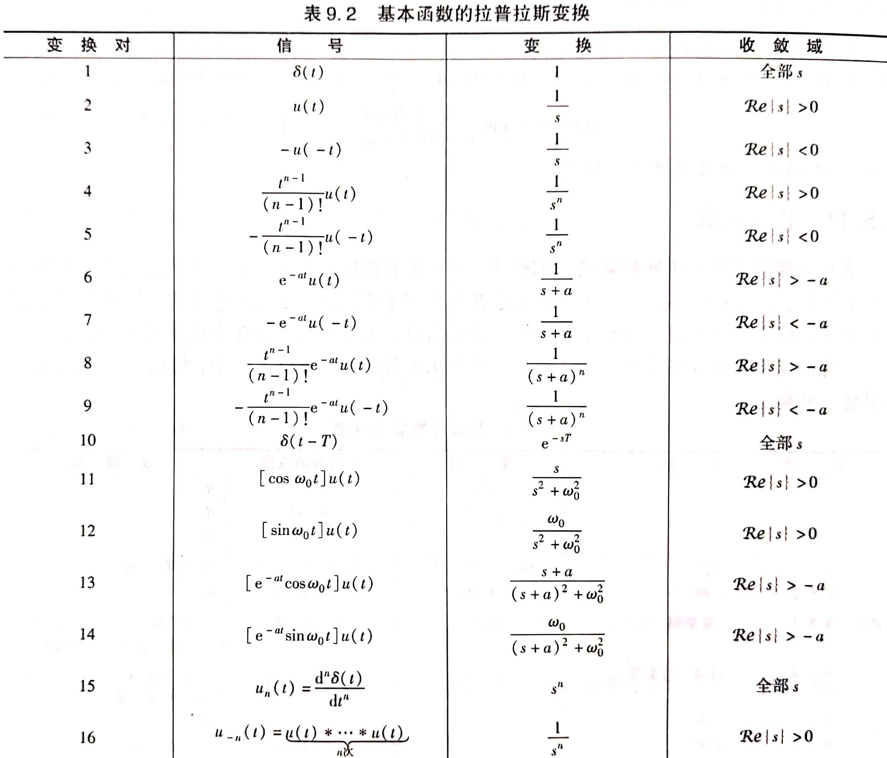
9.6 利用拉普拉斯变换分析与表征LTI系统
9.6.1 因果性
因果性：
- 因果系统的\(h(t)\)是右边信号，其\(H(s)\)的ROC必是最右边极点的右边
- 反因果系统的\(h(t)\)是左边信号，其\(H(s)\)的ROC必是最左边极点的左边
- 只有当\(H(s)\)为有理函数时，系统的因果性等价于ROC为最右极点的右边
9.6.2 稳定性
稳定性：
- 如果系统稳定，\(H(s)\)的ROC必然包括\(j\omega\)轴
- 因果稳定系统的\(H(s)\)，其全部极点必须位于S平面的左半边
9.6.3 由线性常系数微分方程表征的LTI系统
\(\sum_{k=0}^{N}a_k\frac{d^{k}y(t)}{dt^k}=\sum_{k=0}^{M}b_k\frac{d^kx(t)}{dt^k}\)
- 拉氏变换得：\(H(s)=\frac{Y(s)}{X(s)}=\frac{\sum_{k=0}^{M}b_ks^k}{\sum_{k=0}^{N}a_ks^k}=\frac{N(s)}{D(s)}\)，是一个有理函数
- \(H(s)\)的ROC需要由系统得相关特性确定：
- 如果LCCDE具有一组全为0的初始条件，则\(H(s)\)的ROCC必是最右边极点的右边
- 如果LCCDE描述的系统是因果的，则\(H(s)\)的ROC必是最右边极点的右边
- 如果LCCDE描述的系统是稳定的，则\(H(s)\)的ROC必包括\(j\omega\)轴
9.7 单边拉普拉斯变换
\(\begin{cases}X(s)=\int_{0^-}^{\infty}x(t)e^{-st}dt\\x(t)=\frac{1}{2\pi j}\int_{\sigma-\infty}^{\sigma+\infty}X(s)e^{st}ds\end{cases}\)
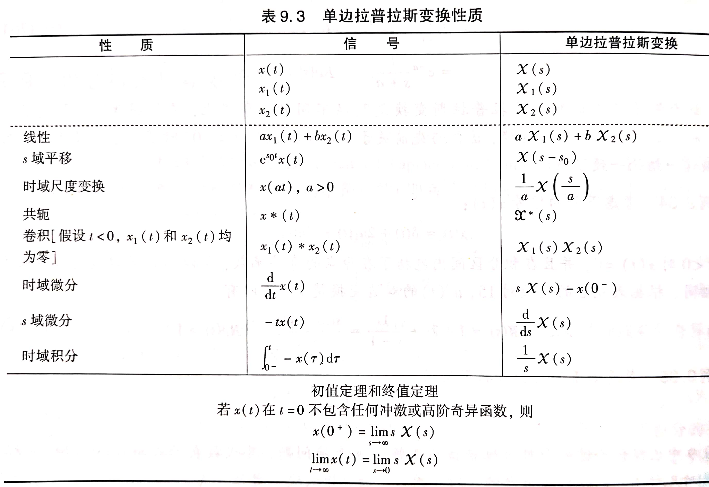
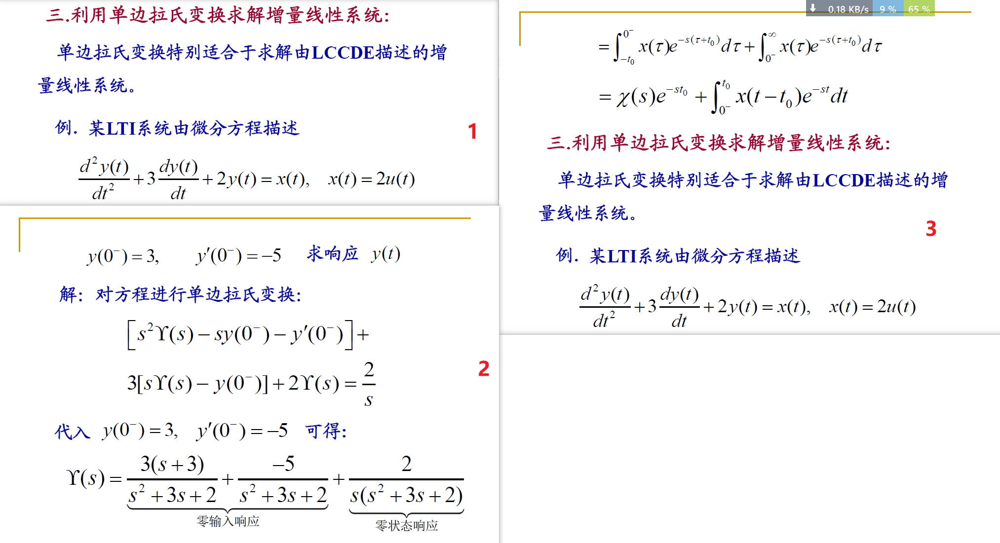
10 Z变换
10.1 Z变换
\(\begin{cases}X(z)=\sum_{n=-\infty}^{+\infty}x[n]z^{-n}\\x[n]=\frac{1}{2\pi j}\oint X(z)z^{n-1}dz\end{cases}\)
10.2 Z变换收敛域
ROC性质：
- \(X(z)\)的收敛域是在z平面内以远点为中心的圆环
- ROC内不包含任何极点
- 如果\(x[n]\)是有限长序列，则ROC为整个z平面，可能除去\(z=0\)或\(z=\infty\)
- 如果ROC为右边序列，且\(|z|=r_0\)的圆位于ROC内，则\(|z|>r_0\)的所有有限z值一定在ROC内
- 如果ROC为右边序列，且\(|z|=r_0\)的圆位于ROC内，则\(0<|z|<r_0\)的所有z值一定在ROC内
- 如果ROC为双边序列，且\(|z|=r_0\)的圆位于ROC内，ROC一定是包含该圆的环状区域
有理ROC的性质：
- ROC被极点界定或延伸至无穷远
- \(x[n]\)为右边序列，则ROC为最外极点的外部；如果\(x[n]\)还是因果序列，则ROC包括\(z=\infty\)
- \(x[n]\)为左边序列，则ROC为最内极点的内部；如果\(x[n]\)还是反因果序列，则ROC包括\(z=0\)
10.3 Z变换的性质
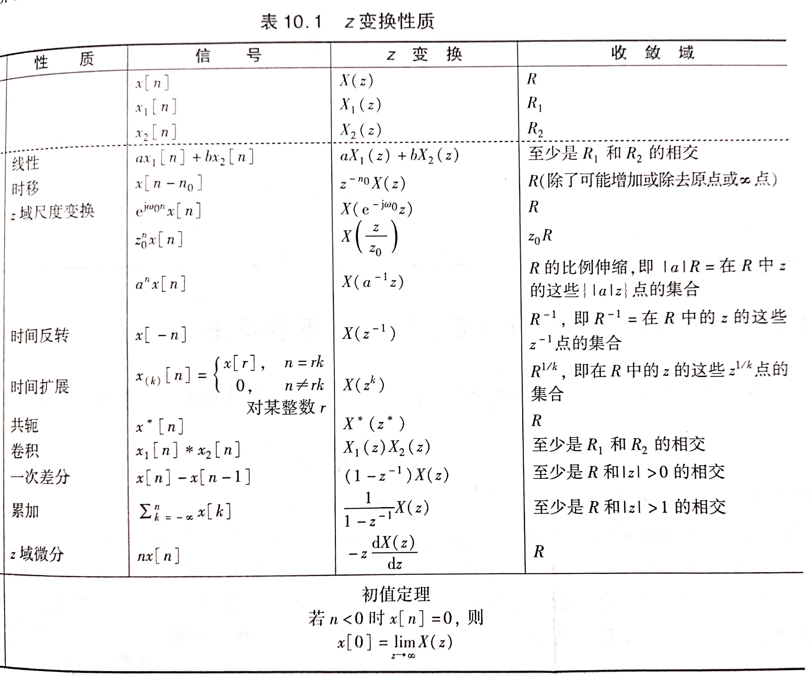
10.4 常见Z变换对
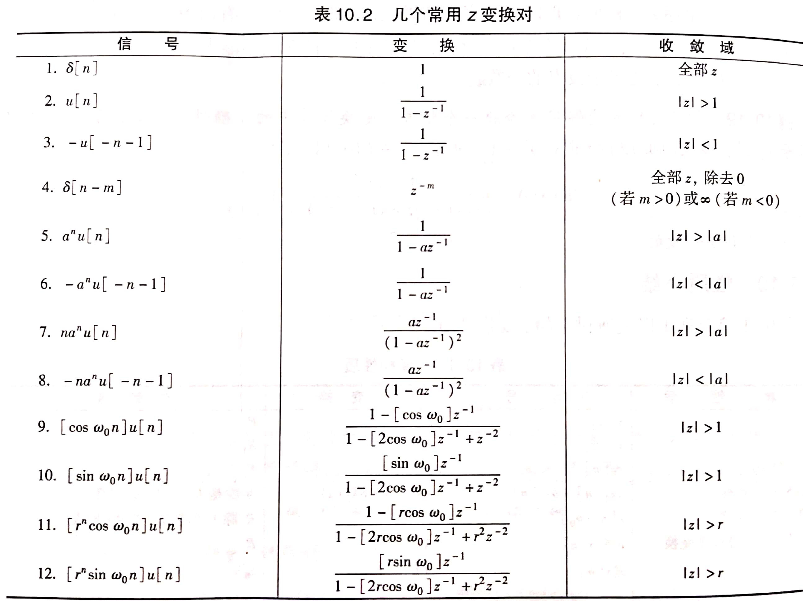
10.5 利用Z变换分析与表征LTI系统
10.5.1 因果性
- 对于一个离散时间LTI系统，当且仅当系统函数的ROC在某个圆外部，且包含\(z=\infty\)时，系统是因果的
- 具有有理\(H(z)\)的LTI系统是因果的，当且仅当ROC位于最外极点外边的某个圆外部，且分子的阶次不能高于分母阶次
10.5.2 稳定性
- 对于LTI系统，当且仅当系统函数\(H(z)\)的ROC包括单位元时，系统是稳定的
- 具有有理\(H(z)\)的因果LTI系统是稳定的，当且仅当\(H(z)\)的全部极点都位于单位圆内时
10.5.3 由线性常系数差分方程表征的LTI系统
\(\sum_{k=0}^{N}a_ky[n-k]=\sum_{k=0}^{M}b_kx[n-k]\)
- Z变换得：\(H(z)=\frac{Y(z)}{X(z)}=\frac{\sum_{k=0}^{M}b_kz^{-k}}{\sum_{k=0}^{N}a_kz^{-k}}\)